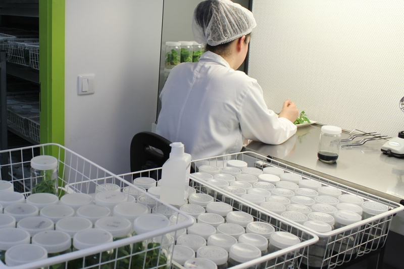
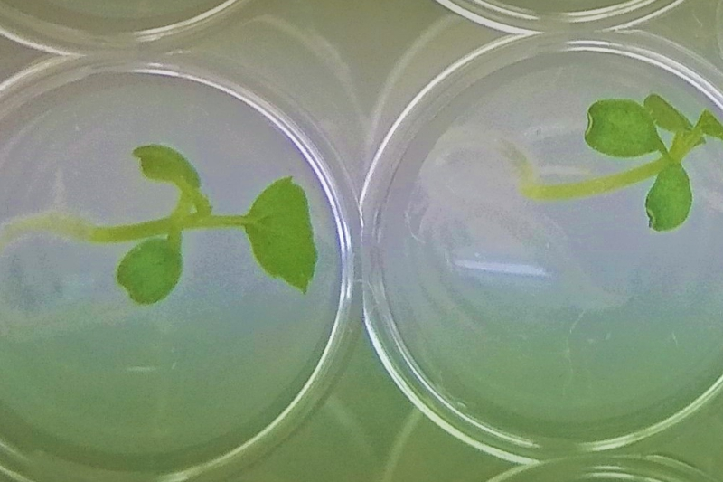
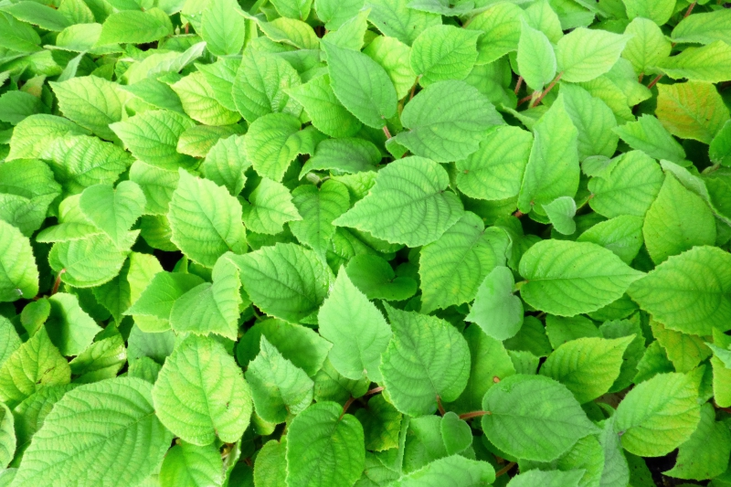
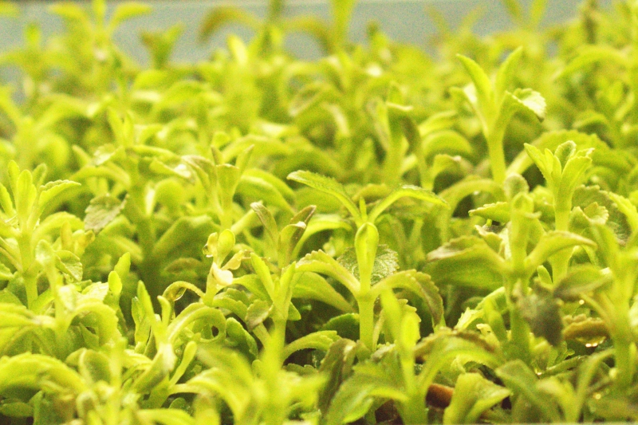

marronesdelsur
Plantas de castaño y
asesoría agrícola especializada
marronesdelsur es un vivero agrícola especializado en castañas, enfocado en la producción de planta de calidad y en el acompañamiento técnico de productores. Nuestro objetivo es mejorar la rentabilidad de cada finca con material vegetal adaptado, planificación de plantación y manejo agronómico eficiente.
Trabajamos principalmente con asesorías: diseño de nuevas plantaciones, reconversión de castañares, nutrición y riego, control sanitario, poda y seguimiento productivo. Combinamos experiencia de campo con criterios técnicos para que cada cliente tome decisiones seguras desde la plantación hasta la entrada en producción.

Ayudamos a pequeños y medianos productores a iniciar o profesionalizar su proyecto de castañas con un enfoque práctico, cercano y orientado a resultados en campo.
Nuestro servicio combina vivero + asesoría técnica continua, para que cada plantación se establezca correctamente y mantenga su productividad en el tiempo.



